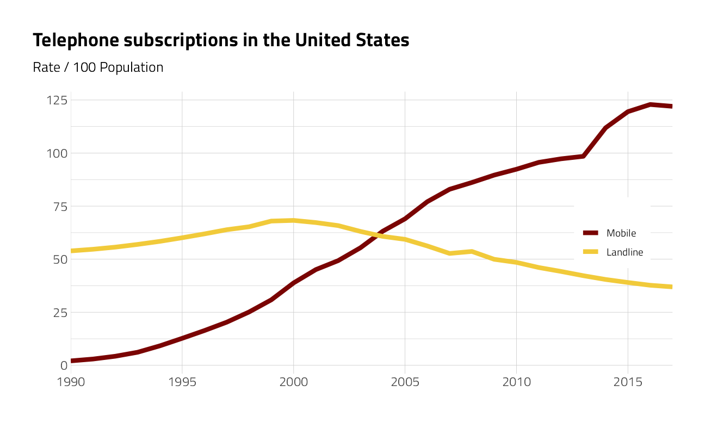
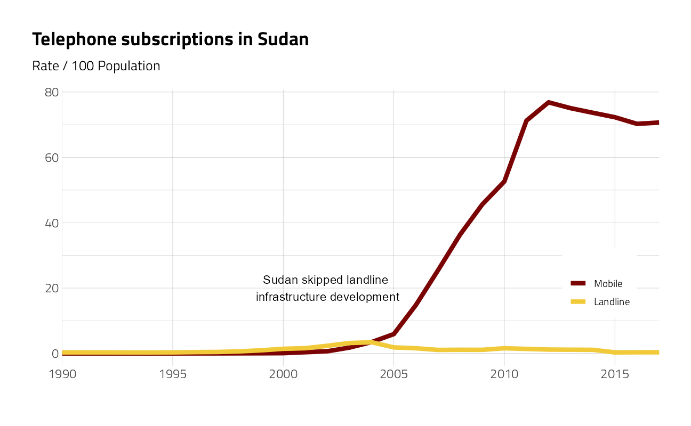
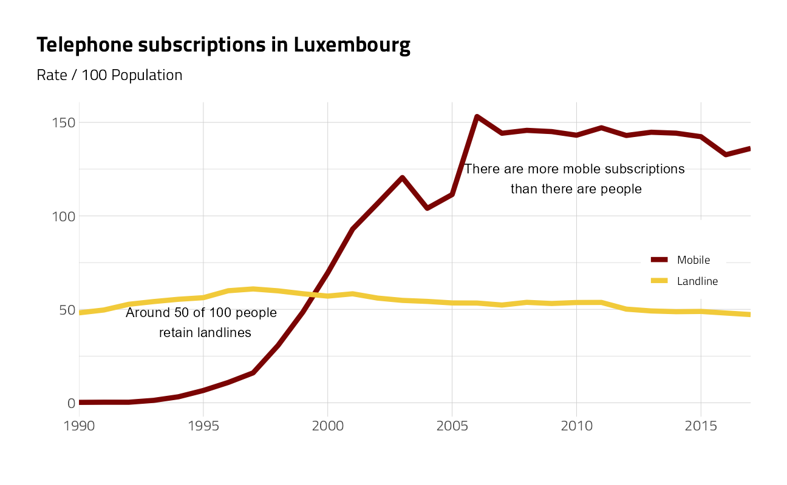
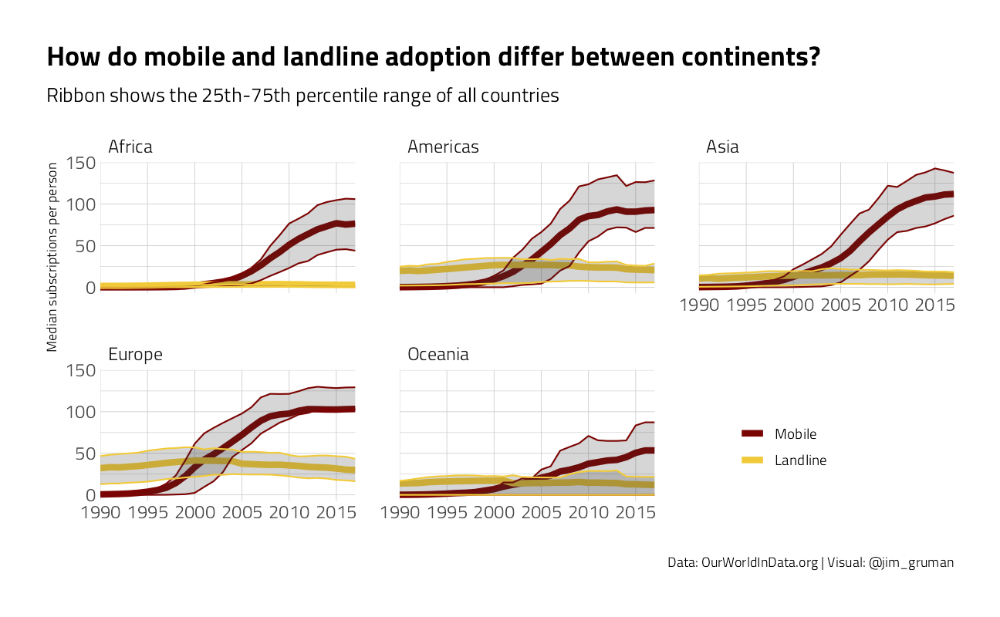
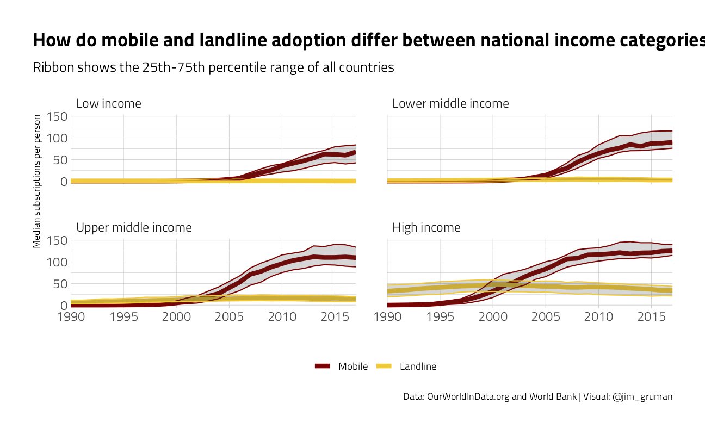
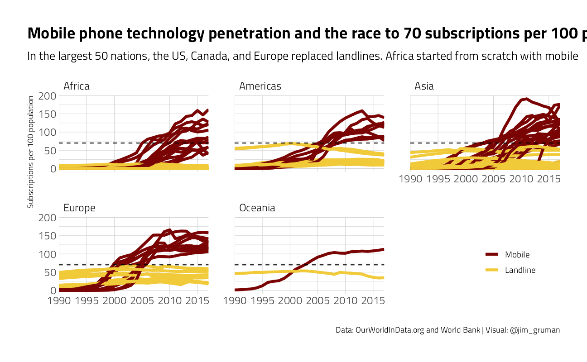
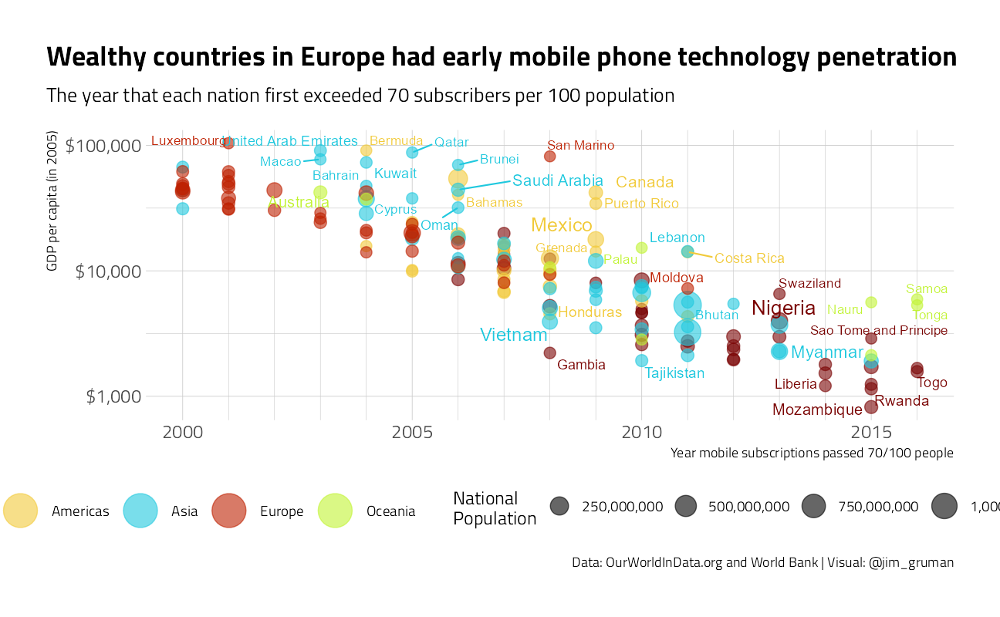

Historical Phone Usage
November 10, 2020
Last updated: 2021-09-08
Checks: 7 0
Knit directory: myTidyTuesday/
This reproducible R Markdown analysis was created with workflowr (version 1.6.2). The Checks tab describes the reproducibility checks that were applied when the results were created. The Past versions tab lists the development history.
Great! Since the R Markdown file has been committed to the Git repository, you know the exact version of the code that produced these results.
Great job! The global environment was empty. Objects defined in the global environment can affect the analysis in your R Markdown file in unknown ways. For reproduciblity it’s best to always run the code in an empty environment.
The command set.seed(20210907) was run prior to running the code in the R Markdown file. Setting a seed ensures that any results that rely on randomness, e.g. subsampling or permutations, are reproducible.
Great job! Recording the operating system, R version, and package versions is critical for reproducibility.
Nice! There were no cached chunks for this analysis, so you can be confident that you successfully produced the results during this run.
Great job! Using relative paths to the files within your workflowr project makes it easier to run your code on other machines.
Great! You are using Git for version control. Tracking code development and connecting the code version to the results is critical for reproducibility.
The results in this page were generated with repository version 8747134. See the Past versions tab to see a history of the changes made to the R Markdown and HTML files.
Note that you need to be careful to ensure that all relevant files for the analysis have been committed to Git prior to generating the results (you can use wflow_publish or wflow_git_commit). workflowr only checks the R Markdown file, but you know if there are other scripts or data files that it depends on. Below is the status of the Git repository when the results were generated:
Ignored files:
Ignored: .Rhistory
Ignored: .Rproj.user/
Ignored: catboost_info/
Ignored: data/2021-09-08/
Ignored: data/acs_poverty.rds
Ignored: data/hike_data.rds
Ignored: data/us_states.rds
Ignored: data/weatherstats_toronto_daily.csv
Note that any generated files, e.g. HTML, png, CSS, etc., are not included in this status report because it is ok for generated content to have uncommitted changes.
These are the previous versions of the repository in which changes were made to the R Markdown (analysis/PhoneAdoption.Rmd) and HTML (docs/PhoneAdoption.html) files. If you’ve configured a remote Git repository (see ?wflow_git_remote), click on the hyperlinks in the table below to view the files as they were in that past version.
| File | Version | Author | Date | Message |
|---|---|---|---|---|
| Rmd | 8747134 | opus1993 | 2021-09-08 | modern colore scheme |
The data this week comes from OurWorldInData.org and is related to telephone subscriptions, mobile and landline, as part of the Adoption of technologies around the world series.
Their web page presents high quality interactive javascript visuals of time series line charts and map chloropleths as
and
Our mission is to discover other insights with the dataset
Load the weekly Data
Download the weekly data and make available in the tt object.
tt <- tt_load("2020-11-10")
Downloading file 1 of 2: `mobile.csv`
Downloading file 2 of 2: `landline.csv`Let’s take an initial look at the format of the data available. There are two tables included. Some of the gdp data is missing
The subs figure is a rate of subscriptions per 100 population
Mobile data is only available to 2017. To make meaningful comparisons, we will stack the datasets and trim to 2017
phones <- bind_rows(
tt$mobile %>%
rename(subscriptions = mobile_subs) %>%
mutate(type = "Mobile"),
tt$landline %>%
rename(subscriptions = landline_subs) %>%
mutate(type = "Landline")
) %>%
rename(country = entity) %>%
mutate(
type = fct_relevel(type, c("Mobile", "Landline")),
year = as.integer(year)
) %>%
filter(year <= 2017L, !str_detect(country, "Serbia")) %>%
complete(type,
nesting(continent, country),
year = 1990L:2017L
) %>%
group_by(country) %>%
tidyr::fill(subscriptions) %>%
ungroup() %>%
tidyr::replace_na(list(subscriptions = 0))For the United States:
phones %>%
filter(country == "United States", !is.na(subscriptions)) %>%
ggplot(aes(year, subscriptions, color = type)) +
geom_line(size = 2) +
scale_x_continuous(
expand = expansion(mult = c(0, 0)),
breaks = seq(1990, 2020, 5),
minor_breaks = NULL
) +
scale_linetype_manual(guide = guide_legend(reverse = FALSE)) +
labs(
title = "Telephone subscriptions in the United States",
subtitle = "Rate / 100 Population", x = "", y = "", color = ""
) +
theme(
legend.position = c(0.9, 0.5),
legend.background = element_rect(color = "white"),
axis.line.x = element_blank()
)
For the single nation of Sudan:
phones %>%
filter(country == "Sudan", !is.na(subscriptions)) %>%
ggplot(aes(year, subscriptions, color = type)) +
geom_line(size = 2) +
scale_x_continuous(
expand = expansion(mult = c(0, 0)),
breaks = seq(1990, 2020, 5),
minor_breaks = NULL
) +
scale_linetype_manual(guide = guide_legend(reverse = FALSE)) +
labs(
title = "Telephone subscriptions in Sudan",
subtitle = "Rate / 100 Population", x = "", y = "", color = ""
) +
annotate("text",
x = 2002, y = 20,
label = "Sudan skipped landline \ninfrastructure development",
size = 4,
color = "black"
) +
theme(
legend.position = c(0.9, 0.3),
legend.background = element_rect(color = "white"),
axis.line.x = element_blank()
)
For the single nation of Luxembourg:
phones %>%
filter(country == "Luxembourg", !is.na(subscriptions)) %>%
ggplot(aes(year, subscriptions, color = type)) +
geom_line(size = 2) +
scale_x_continuous(
expand = expansion(mult = c(0, 0)),
breaks = seq(1990, 2020, 5),
minor_breaks = NULL
) +
scale_linetype_manual(guide = guide_legend(reverse = FALSE)) +
labs(
title = "Telephone subscriptions in Luxembourg",
subtitle = "Rate / 100 Population", x = "", y = "", color = ""
) +
annotate("text",
x = 1995, y = 43,
label = "Around 50 of 100 people \n retain landlines",
size = 4,
color = "black"
) +
annotate("text",
x = 2010, y = 120,
label = "There are more moble subscriptions \nthan there are people",
size = 4,
color = "black"
) +
theme(
legend.position = c(0.9, 0.5),
legend.background = element_rect(color = "white"),
axis.line.x = element_blank()
)
For the single nation of North Korea:
phones %>%
filter(country == "North Korea", !is.na(subscriptions)) %>%
ggplot(aes(year, subscriptions, color = type)) +
geom_line(size = 2) +
scale_x_continuous(
expand = expansion(mult = c(0, 0)),
breaks = seq(1990, 2020, 5),
minor_breaks = NULL
) +
scale_linetype_manual(guide = guide_legend(reverse = FALSE)) +
annotate("text",
x = 2010, y = 11,
label = "2017 is unknown",
size = 4,
color = "black"
) +
labs(
title = "Telephone Subscribers in North Korea",
subtitle = "Rate / 100 Population", x = "", y = "", color = ""
) +
theme(
legend.position = c(0.9, 0.5),
legend.background = element_rect(color = "white"),
axis.line.x = element_blank()
)
Descriptive statistics across continents and by national income:
summarize_subscriptions <- . %>% # making the summary re-usable
filter(!is.na(subscriptions)) %>%
summarize(
avg_subscriptions = mean(subscriptions),
median_subscriptions = median(subscriptions),
q25 = quantile(subscriptions, .25),
q75 = quantile(subscriptions, .75),
.groups = "drop"
)
phones %>%
filter(!is.na(subscriptions)) %>%
group_by(year, continent, type) %>%
summarize_subscriptions() %>%
ggplot(aes(year,
avg_subscriptions,
color = type
)) +
geom_line(size = 2) +
geom_ribbon(aes(ymin = q25, ymax = q75), alpha = .2, show.legend = FALSE) +
scale_x_continuous(
expand = expansion(mult = c(0, 0)),
breaks = seq(1990, 2020, 5),
minor_breaks = NULL
) +
facet_wrap(~continent) +
theme(legend.position = c(0.8, 0.2)) +
labs(
x = "",
y = "Median subscriptions per person",
color = "",
title = "How do mobile and landline adoption differ between continents?",
subtitle = "Ribbon shows the 25th-75th percentile range of all countries",
caption = "Data: OurWorldInData.org | Visual: @jim_gruman"
)
country_incomes <- WDI(
indicator = c(
gdp_per_capita = "NY.GDP.PCAP.PP.KD",
pop = "SP.POP.TOTL"
),
start = 2005,
end = 2005,
extra = TRUE
) %>%
as_tibble() %>%
select(code = iso3c, income, gdp_per_capita, pop) %>%
filter(!is.na(income)) %>%
mutate(income = as_factor(income)) %>%
mutate(income = fct_relevel(
income,
"Aggregates",
"Low income",
"Lower middle income",
"Upper middle income"
))
by_year_income <- phones %>%
inner_join(country_incomes, by = "code") %>%
group_by(year, income, type) %>%
summarize_subscriptions()
by_year_income %>%
ggplot(aes(year,
median_subscriptions,
color = type
)) +
geom_line(size = 2) +
geom_ribbon(aes(ymin = q25, ymax = q75),
alpha = .2, show.legend = FALSE
) +
scale_x_continuous(
expand = expansion(mult = c(0, 0)),
breaks = seq(1990, 2020, 5),
minor_breaks = NULL
) +
facet_wrap(~income) +
labs(
y = "Median subscriptions per person", x = "",
color = "",
title = "How do mobile and landline adoption differ between national income categories?",
subtitle = "Ribbon shows the 25th-75th percentile range of all countries",
caption = "Data: OurWorldInData.org and World Bank | Visual: @jim_gruman"
) +
theme(legend.position = "bottom")
What are ways we could summarize stats for each country?
country_sizes <- phones %>%
group_by(country) %>%
summarize(
avg_population = mean(total_pop, na.rm = TRUE),
.groups = "drop"
) %>%
slice_max(order_by = avg_population, n = 52)
phones %>%
semi_join(country_sizes, by = "country") %>%
ggplot(aes(year,
subscriptions,
color = type,
group = interaction(type, country)
)) +
geom_line(size = 1.5) +
scale_x_continuous(
expand = expansion(mult = c(0, 0)),
breaks = seq(1990, 2020, 5),
minor_breaks = NULL
) +
facet_wrap(~continent) +
geom_hline(yintercept = 70, lty = 2) +
labs(
y = "Subscriptions per 100 population",
x = "",
title = "Mobile phone technology penetration and the race to 70 subscriptions per 100 people",
subtitle = "In the largest 50 nations, the US, Canada, and Europe replaced landlines. Africa started from scratch with mobile",
color = "",
caption = "Data: OurWorldInData.org and World Bank | Visual: @jim_gruman"
) +
theme(legend.position = c(0.9, 0.2))
countries_summarized <- phones %>%
filter(!is.na(subscriptions)) %>%
select(-total_pop, gdp_per_cap) %>%
pivot_wider(names_from = type, values_from = subscriptions) %>%
group_by(continent, country, code) %>%
summarize(
year_past_70_mobile = na_if(min(year[Mobile >= 70]), Inf),
peak_landline = max(Landline, na.rm = TRUE),
peak_mobile = max(Mobile),
n_mobile = sum(!is.na(Mobile))
) %>%
ungroup() %>%
inner_join(country_incomes, by = "code") %>%
filter(n_mobile >= 25) %>%
arrange(desc(year_past_70_mobile))
countries_summarized %>%
tidyr::drop_na() %>%
ggplot(aes(year_past_70_mobile,
gdp_per_capita,
color = continent,
size = pop
)) +
geom_point(alpha = 0.6) +
geom_text_repel(aes(label = country), show.legend = FALSE) +
scale_y_log10(labels = dollar) +
scale_x_continuous(
expand = expansion(mult = c(0.05, 0.05)),
breaks = seq(1990, 2020, 5),
minor_breaks = seq(1990, 2019, 1)
) +
scale_color_discrete(guide = guide_legend(override.aes = list(size = 10))) +
scale_size_continuous(
labels = comma,
range = c(3, 8)
) +
labs(
y = "GDP per capita (in 2005)",
x = "Year mobile subscriptions passed 70/100 people",
title = "Wealthy countries in Europe had early mobile phone technology penetration",
subtitle = "The year that each nation first exceeded 70 subscribers per 100 population",
size = "National \nPopulation",
color = "",
caption = "Data: OurWorldInData.org and World Bank | Visual: @jim_gruman"
) +
theme(
legend.position = c(0.95, 0.8),
legend.background = element_rect(color = "white")
)
sessionInfo()R version 4.1.1 (2021-08-10)
Platform: x86_64-w64-mingw32/x64 (64-bit)
Running under: Windows 10 x64 (build 19043)
Matrix products: default
locale:
[1] LC_COLLATE=English_United States.1252
[2] LC_CTYPE=English_United States.1252
[3] LC_MONETARY=English_United States.1252
[4] LC_NUMERIC=C
[5] LC_TIME=English_United States.1252
attached base packages:
[1] stats graphics grDevices utils datasets methods base
other attached packages:
[1] ggrepel_0.9.1 ggtext_0.1.1 visdat_0.5.3 naniar_0.6.1
[5] WDI_2.7.4 scales_1.1.1 tidytuesdayR_1.0.1 hrbrthemes_0.8.0
[9] forcats_0.5.1 stringr_1.4.0 dplyr_1.0.7 purrr_0.3.4
[13] readr_2.0.1 tidyr_1.1.3 tibble_3.1.4 ggplot2_3.3.5
[17] tidyverse_1.3.1 workflowr_1.6.2
loaded via a namespace (and not attached):
[1] readxl_1.3.1 backports_1.2.1 systemfonts_1.0.2
[4] workflows_0.2.3 selectr_0.4-2 plyr_1.8.6
[7] splines_4.1.1 listenv_0.8.0 usethis_2.0.1
[10] digest_0.6.27 foreach_1.5.1 htmltools_0.5.2
[13] yardstick_0.0.8 viridis_0.6.1 parsnip_0.1.7.900
[16] fansi_0.5.0 magrittr_2.0.1 tune_0.1.6
[19] tzdb_0.1.2 recipes_0.1.16 globals_0.14.0
[22] modelr_0.1.8 gower_0.2.2 extrafont_0.17
[25] vroom_1.5.4 R.utils_2.10.1 extrafontdb_1.0
[28] hardhat_0.1.6 rsample_0.1.0 dials_0.0.9.9000
[31] colorspace_2.0-2 rvest_1.0.1 textshaping_0.3.5
[34] haven_2.4.3 xfun_0.25 crayon_1.4.1
[37] jsonlite_1.7.2 survival_3.2-11 iterators_1.0.13
[40] glue_1.4.2 gtable_0.3.0 ipred_0.9-11
[43] R.cache_0.15.0 Rttf2pt1_1.3.9 future.apply_1.8.1
[46] infer_1.0.0 DBI_1.1.1 Rcpp_1.0.7
[49] viridisLite_0.4.0 gridtext_0.1.4 bit_4.0.4
[52] GPfit_1.0-8 lava_1.6.10 prodlim_2019.11.13
[55] httr_1.4.2 ellipsis_0.3.2 farver_2.1.0
[58] pkgconfig_2.0.3 R.methodsS3_1.8.1 nnet_7.3-16
[61] sass_0.4.0 dbplyr_2.1.1 utf8_1.2.2
[64] here_1.0.1 RJSONIO_1.3-1.5 labeling_0.4.2
[67] tidyselect_1.1.1 rlang_0.4.11 DiceDesign_1.9
[70] later_1.3.0 munsell_0.5.0 cellranger_1.1.0
[73] tools_4.1.1 cachem_1.0.6 cli_3.0.1
[76] generics_0.1.0 broom_0.7.9 evaluate_0.14
[79] fastmap_1.1.0 yaml_2.2.1 ragg_1.1.3
[82] rematch2_2.1.2 bit64_4.0.5 knitr_1.33
[85] fs_1.5.0 future_1.22.1 whisker_0.4
[88] R.oo_1.24.0 xml2_1.3.2 compiler_4.1.1
[91] rstudioapi_0.13 curl_4.3.2 reprex_2.0.1
[94] lhs_1.1.1 bslib_0.3.0 stringi_1.7.4
[97] highr_0.9 gdtools_0.2.3 lattice_0.20-44
[100] Matrix_1.3-4 styler_1.5.1 conflicted_1.0.4
[103] vctrs_0.3.8 tidymodels_0.1.3 pillar_1.6.2
[106] lifecycle_1.0.0 furrr_0.2.3 jquerylib_0.1.4
[109] httpuv_1.6.2 R6_2.5.1 promises_1.2.0.1
[112] gridExtra_2.3 parallelly_1.27.0 codetools_0.2-18
[115] MASS_7.3-54 assertthat_0.2.1 rprojroot_2.0.2
[118] withr_2.4.2 parallel_4.1.1 hms_1.1.0
[121] grid_4.1.1 rpart_4.1-15 timeDate_3043.102
[124] class_7.3-19 rmarkdown_2.10 git2r_0.28.0
[127] pROC_1.18.0 lubridate_1.7.10